120年前的今天，谭嗣同血溅菜市口，临刑前谭嗣同高呼：“有心杀贼，无力回天。死得其所，快哉快哉！
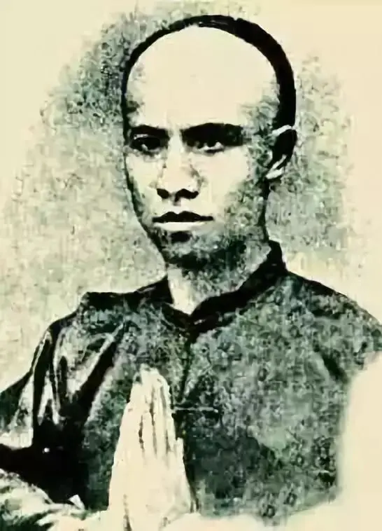
“一个勇敢豪迈、悲剧惨烈的愤青”，这是我在学生时期对谭嗣同的模糊印象。
如今步入社会，目睹了小孩被汽车碾压，20人经过却无人救助，见证了三瑟、携@程、堵一秒等无数悲凉的事件后，再次回想谭嗣同和戊戌变法时，后背不禁腾起一股冰冷的凉气。
一百二十年后，盲目自大的人还在、吃人血馒头的人还在，谭嗣同却没有了！
所以，今天大虾一定要向大家推荐这部《谭嗣同》，以此片来纪念中国第一次的思想解放运动和其中的英雄。
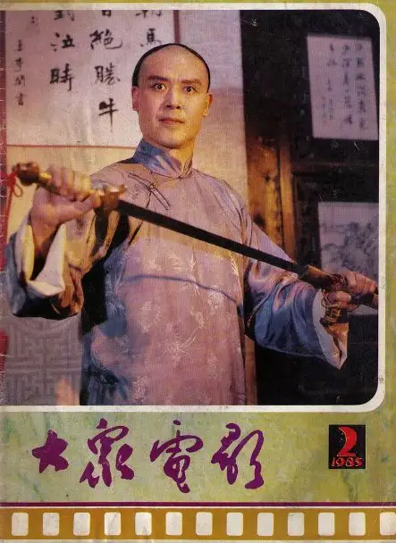
这是一部制作精良、严格考究的经典老片，1984年在大陆上映。
导演是被誉为“中国第一历史剧导演”的陈家林，他曾导演过经典的《武则天》、《唐明皇》和《康熙王朝》。
上世纪初，大清败于甲午中日战争，签订了丧权辱国的《马关条约》。
这场战争宣告了洋务运动的失败，同时也打醒了很多有识之士。
康有为率同梁启超等人公车上书请求变法，朝廷大臣翁同龢、李鸿藻、汪鸣銮等人力荐革新。
朝野之外，30岁的谭嗣同在湖南组织仁人义士倡导新学，引起当地轰动。
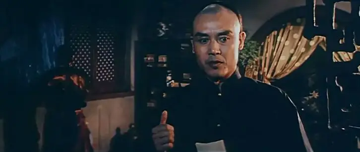
光绪皇帝心中也是忧愤难平，他不想成为亡国之君愧对列祖列宗，也不想臣民被人鱼肉陷四万万人民于水火之中。
虽无实权，光绪还是顶住重重压力大胆重用维新人士，竭力推进变法之举。
可是维新运动才刚开始，被康有为誉之为“中国维新第一导师“的翁同龢却被慈禧免去协办大学士及军机大臣等职务，逐回原籍。
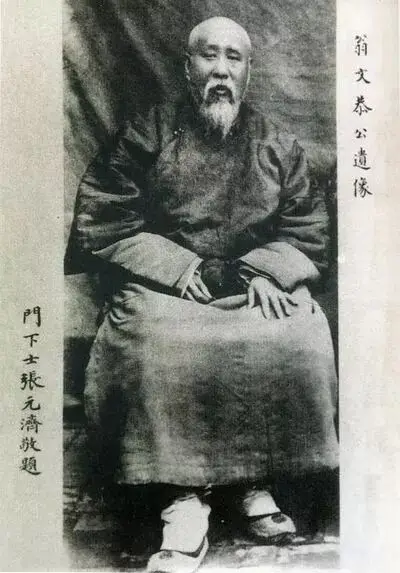
用人之际却失去了左膀右臂，光绪一筹莫展。
所幸，光绪已下亲谕召见谭嗣同上京辅政。
上京途中，谭嗣同看到祖国哀鸿遍野、饿殍满地，心中无比悲痛，他誓要为四万万生灵肝脑涂地。
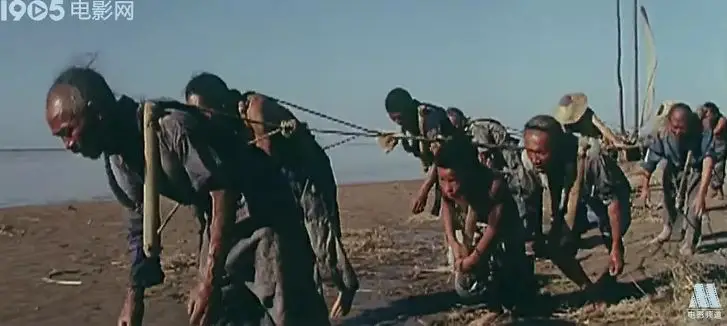
见到光绪皇帝后，光绪问谭嗣同维新变法如何才能成功。
谭嗣同告诉光绪，要维新必先除旧，要裁减冗余机构和官员，要竭力掌握军权以保障变法推行，同时也要对反对变法者严惩不怠。
谭嗣同有胆有识的回答得到了光绪的肯定，因此而得到重用。
有了康有为、谭嗣同等人的鼎力相助，百日维新如火如荼地进行着。
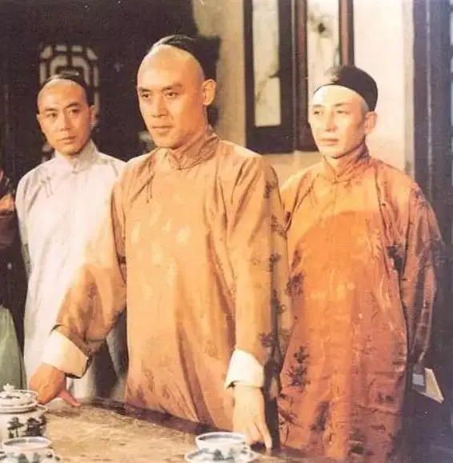
可是这股新风却遭到重重堵截，其中反对者的嘴脸熟悉又可怕。
有人骄傲自大，认为大清是天朝 ，而天朝处于各国的中央，才不屑学洋鬼子的东西。
有人因循守旧，一把鼻涕一把泪地说祖宗之法不可变。
有人担心乌纱帽丢了、俸禄被取消了而自怨自怜。
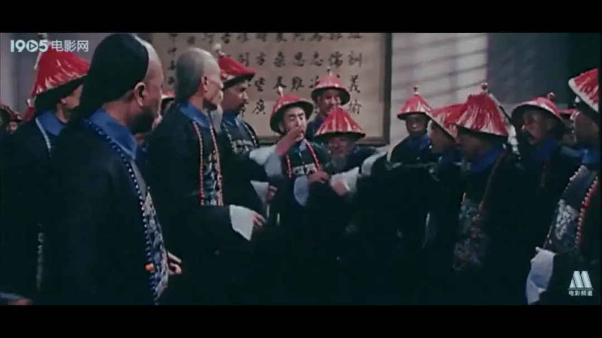
有人则睁一只眼闭一只眼，不合作、不表态，像死猪一样瘫在地上推都推不动。
更有人则大谈阴谋论，攻击谭嗣同等人居心叵测挟天子以令诸侯，借变法之名欲架空前廷旧臣行谋权篡位之举。
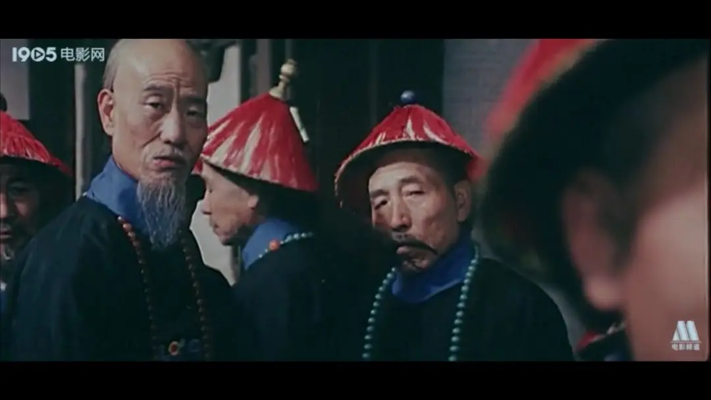
甚至火药都烧到了后宫，支持变法的妃子被人冷嘲热讽，说她想跟着皇帝去美国逛街。
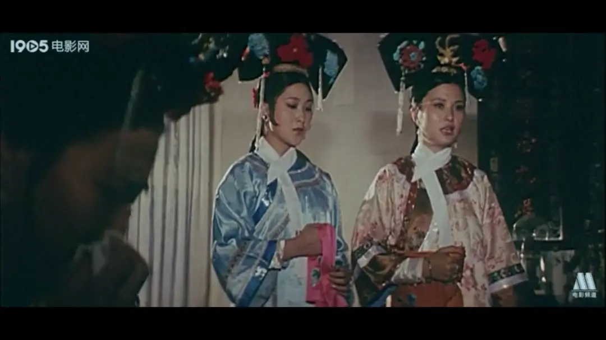
除了朝廷，民间的吃瓜群众更加让人无奈。
有人担心维新影响自己的生意而对变法百般嘲讽。
有人幸灾乐祸地告诉准备科举的人：科举制度将来废了，你就等着吃屎吧。
更多的人对变法毫不关心，他们笑着说，管它什么变法不变法，我们只在乎能不能吃饱肚子。
总之，维新派就是现在被广大“爱国“人民骂的卖国贼、美狗、尖细、煽动分子。
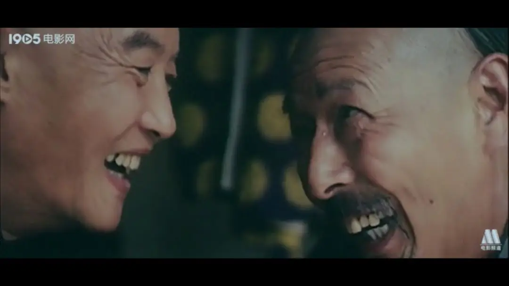
面对重重障碍，维新人士虽然势单力薄，但同仇敌忾。
可是，当变法运动进行的如火如荼的时候，光绪皇帝却被囚禁了。
眼看着变法就要失败，维新人士决定铤而走险欲发动政变围攻、控制慈禧。
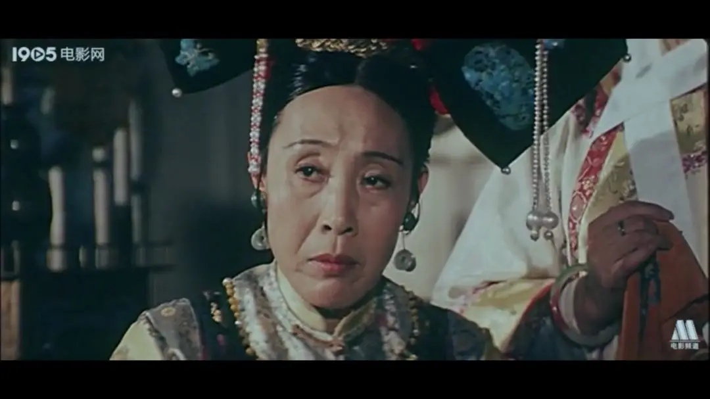
这并非易事，他们最终寄希望于袁世凯。
因为袁世凯当时不仅掌握着新建陆军，他此前还一直支持变法并与康有为等人私交甚密。
所以，维新派将最后的赌注压给了袁世凯。
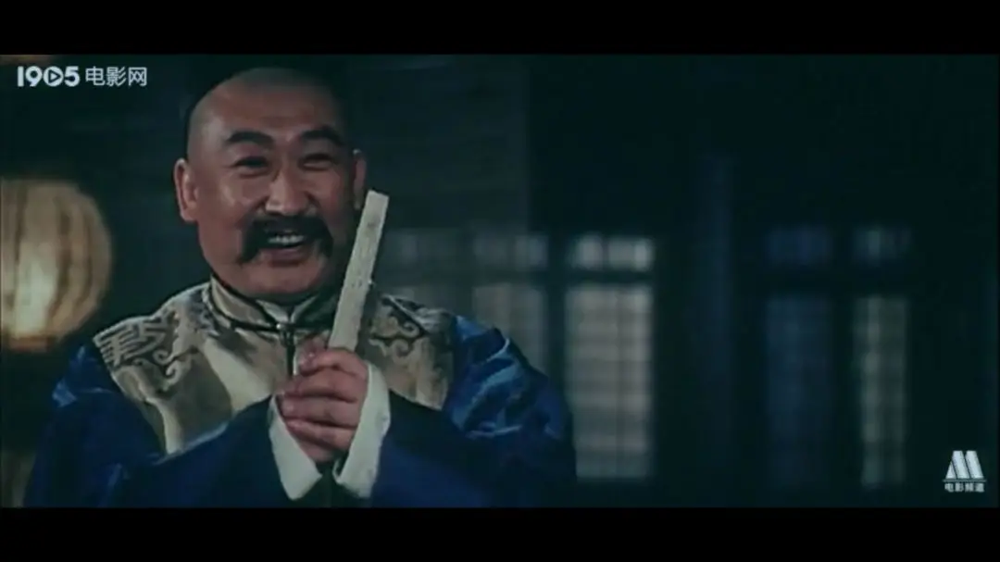
可是，袁世凯却向荣禄告密，致使维新派最后的希望破灭，唯有出逃自保以留青山。
康有为、梁启超纷纷出逃国外，而谭嗣同却放弃了逃生机会，他说：
“各国变法，无不从流血而成，今中国未闻有因变法而流血者，此国之所以不昌。有之，请自嗣同始！”
谭嗣同欲以自己的生命唤醒沉睡的中国。
当他回到家中和妻子做最后告别时，他说“将来告诉后人我是为何而死”。
妻子说“可是我们还没有孩子”。
接着谭嗣同哽咽着说出了一句最绝望的话：这样的中国，多一个孩子不是多一个奴隶么！
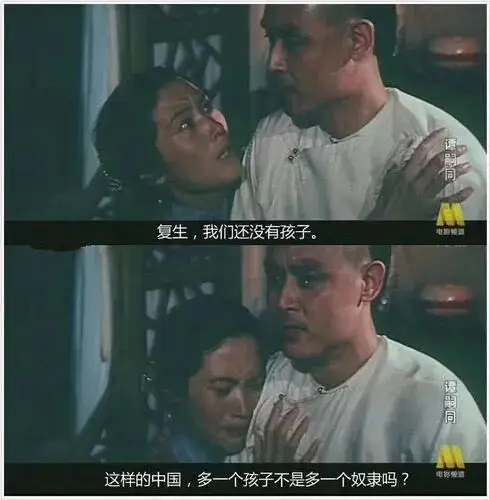
谭嗣同最终被捕入狱，其候刑时，据说曾题诗：
望门投止思张俭，忍死须臾待杜根。
我自横刀向天笑，去留肝胆两昆仑。
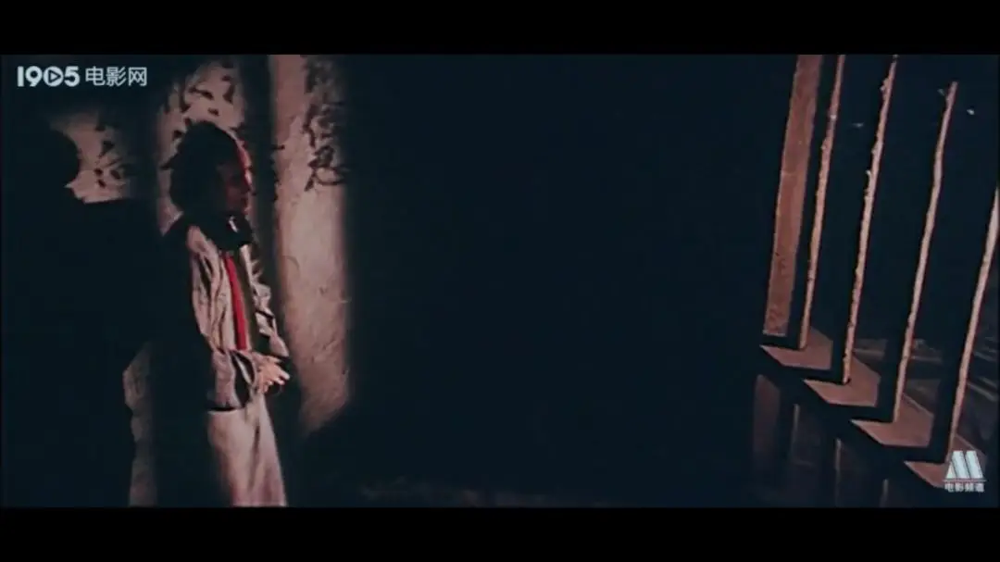
死对于谭嗣同来说一点都不可怕，甚至刽子手也不可怕。
最可怕的是那麻木不仁、吃着人血馒头的群众，当戊戌六君子被押往刑场时。
路上的人笑着说“还想搞变法割别人的辫子，反倒自己的头被割掉了”。
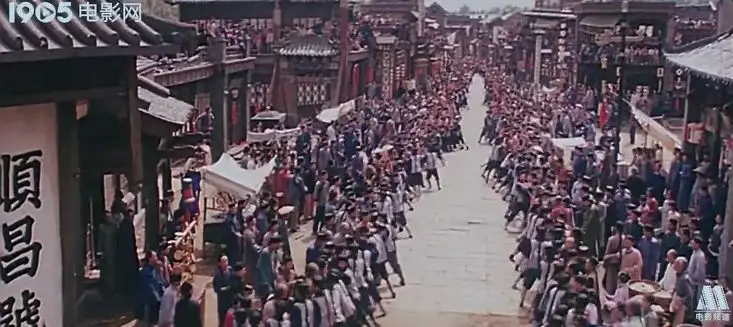
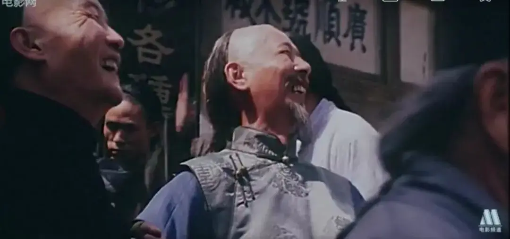
不知谭嗣同最后看似洒脱的仰天长啸里，包含着多么大的无奈和绝望。
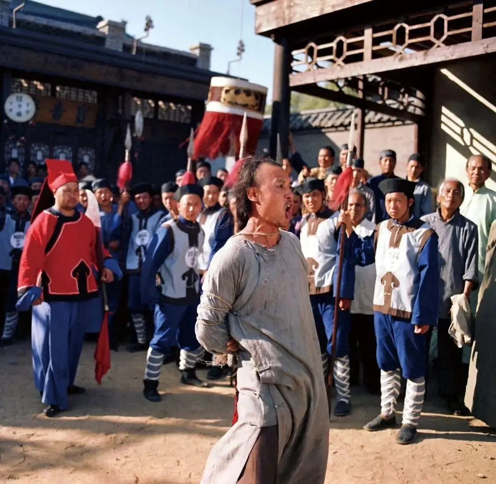
谭嗣同和戊戌变法有其时代的局限，我们不能苛求。
但其明明不可为而为之和最后舍身求义的道德勇气让人钦佩不已。
他们才是民族的希望。
今天，敢说真话的已是凤毛麟角，敢说敢做又有真知灼见的更是绝无仅有。
就道德而言，现在的人不比过去的更好。
如今的每一次无节操都是对英雄先辈的背叛。
如今的每一次无底线都是对谭嗣同的侮辱。
不能再多讲，我们需要对照今天好好想一想谭嗣同和戊戌变法。
这里没有挑逗你眼目情欲的小鲜肉
也没有挑动你肉体情欲的段子
更没有膨胀你今生骄傲的鸡血
我们只在乎那些最质朴真诚的作品
在那里我们才能恢复真正的想象力
我们也坚信这才是我们真正需要的

ID:Six_hundred_hits
长按二维码，一键关注
【六百击】
-END-
电影评论
尽情分享朋友圈

苹果打赏通道
小提示：文末广告是腾讯配送广告，内容与本号无关，但您的每次点击（无需反复点）都会给平台带来几毛收益，欢迎您点击支持六百击。